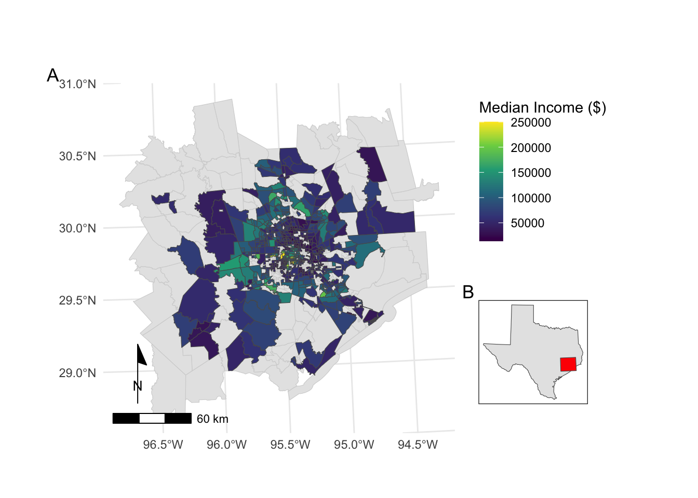
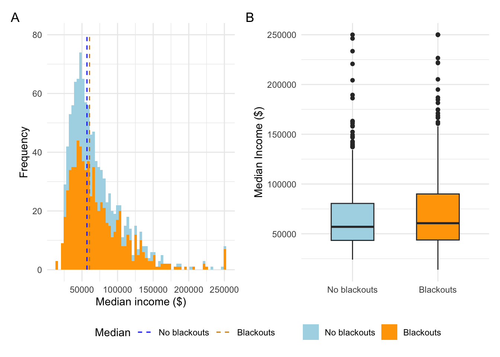

Natural disasters oftentimes occur unpredictably and rapidly, and the severity of them can vary widely. Specifically in the Southern United States, major storms (like Hurricane Katrina) can have devastating and long lasting consequences on communities.1 “In February 2021, the state of Texas suffered a major power crisis, which came about as a result of three severe winter storms sweeping across the United States on February 10–11, 13–17, and 15–20.”2. While these storms seem like once in a blue moon events, they are becoming much more of a normal occurrence. More importantly, storms do not impact all communities the same, and therefore it is critical that we incorporate racial justice components to our lines of environmental analysese to understand how we can mitigate marginalized groups from being disproportianately harmed from climate change.
Goal
The goal of this study is to try and answer the question: Which communities in Houston experienced blackouts from the February 2021 storms, and did they vary by socioeconomic status? Other studies have shown that not only do lower socioeconomic status communities experience more intense consequences of natural disaster, but they also don’t always receive the same degree of aid following one.3
By identifying the total number of houses in Houston that lost power and overlaying socioeconomic data to these homes, we can begin to look at these underlying patterns of potential environmental injustice. These types of studies are becoming critically important as climate change continues to increase the frequency of severe storms including intense precipitation events throughout Texas4 as not all communities are affected the same. We need to look at how communities of varying socioeconomic status are impacted as a result.
Approach
I used remotely-sensed night lights data from before and after the storms to estimate power outages. Data was acquired from the Visible Infrared Imaging Radiometer Suite (VIIRS) from the Suomi satellite. I used the VNP46A1 tolook for variation in night lights before and after the storm as a way of identifying areas that lost electric power as a result of the storms. Furthermore, data containing the physical boundaires and area of buildings and roads is needed to spatially join to areas that lost power. I gathered this data from OpenStreetMap providing high resolution data on the structural layout of the city. Finally, we need to join this data with socioeconomic factor data pertaining to all the communities in Houston affected by the blackouts. I pulled this data from the US Census Bureau (see Readme file) that shows block group county level information on various socioeconomic characterisitcs.
These types of analysis require a variety of different tools to carry out from satellite images and census data to finalized maps. Some of the most important tools in carrying out this analysis include: * loading, transforming, and wrangling vector/raster data * raster operations to identify blackout areas from satellite imagery * vector operations to isolate affected buildings and remove interference (road lights) * spatial joins of regions experiencing blackouts and the total number of untis within them
Data
Night lights
Using NASA’s Worldview to find data pre and post storm, I found satellite images recorded on 2021-02-07 and 2021-02-16 that provided two clear, contrasting images to visualize the extent of the power outage in Texas. VIIRS data is distributed through NASA’s Level-1 and Atmospheric Archive & Distribution System Distributed Active Archive Center (LAADS DAAC). Many NASA Earth data products are distributed in 10x10 degree tiles in sinusoidal equal-area projection that are identified by their horizontal and vertical position in the grid. Houston lies on the border of tiles h08v05 and h08v06, and so I downloaded two tiles per date to ensure the whole city was being included. These data are stored in the VNP46A1 folder:
VNP46A1.A2021038.h08v05.001.2021039064328.h5.tif: tile h08v05, collected on 2021-02-07
VNP46A1.A2021038.h08v06.001.2021039064329.h5.tif: tile h08v06, collected on 2021-02-07
VNP46A1.A2021047.h08v05.001.2021048091106.h5.tif: tile h08v05, collected on 2021-02-16
VNP46A1.A2021047.h08v06.001.2021048091105.h5.tif: tile h08v06, collected on 2021-02-16
Roads
One issue with night light data is that light pollution can interfere with detecting patterns of interest. Highways make up much of the night lights seen from space (see Google’s Earth at Night). Therefore, it is important to minimize falsely identifying areas with reduced traffic as areas without power. OpenStreetMap (OSM) is a collaborative project which creates publicly available geographic data of the world. I used Geofabrik’s download sites to retrieve a shapefile of all highways in Texas and prepared a Geopackage (.gpkg file) containing just the subset of roads that intersect the Houston metropolitan area.
gis_osm_roads_free_1.gpkg
Houses
I also obtained building data from OpenStreetMap. Again, I downloaded from Geofabrick and prepared a GeoPackage containing only houses in the Houston metropolitan area.
gis_osm_buildings_a_free_1.gpkg
Socioeconomic
I used data from the U.S. Census Bureau’s American Community Survey for census tracts in 2019 to reoresent socioeconomic data of different regions of Houston. The folderACS_2019_5YR_TRACT_48.gdb is an ArcGIS “file geodatabase”, a multi-file proprietary format that’s roughly analogous to a GeoPackage file. Each layer contains a subset of the fields documents in the ACS metadata. The geodatabase contains a layer holding the geometry information, separate from the layers holding the ACS attributes. You have to combine the geometry with the attributes to get a feature layer that sf can use.
Analysis
Find locations of blackouts
combine the data
First, I read in the night lights tiles data and combining them into a single stars object for each date (2021-02-07 and 2021-02-16).
code
#reading in raster data t1 =read_stars(file.path(data, "VNP46A1/VNP46A1.A2021038.h08v05.001.2021039064328.tif"))t2 =read_stars(file.path(data,"VNP46A1/VNP46A1.A2021038.h08v06.001.2021039064329.tif"))t3 =read_stars(file.path(data,"VNP46A1/VNP46A1.A2021047.h08v05.001.2021048091106.tif"))t4 =read_stars(file.path(data,"VNP46A1/VNP46A1.A2021047.h08v06.001.2021048091105.tif"))#creating a mosaic of houston raster data for both days lights_mos1 <-st_mosaic(t1, t2)lights_mos2 <-st_mosaic(t3, t4)# plot(lights_mos1)
create a blackout mask
I then found the change in night lights intensity (presumably) caused by the storm. I first reclassified a difference raster, assuming that any location that experienced a drop of more than 200 nW cm-2sr-1 experienced a blackout. NA values were to all locations that experienced a drop of less than 200 nW cm-2sr-1.
code
#finding difference in light intensity by subtracting light difference light_diff <- lights_mos1 - lights_mos2# plot(light_diff)#reclassify raster to give NA values to locations that did not experience a blackoutlight_diff[light_diff <200] =NA# plot(light_diff)
vectorize the mask
I vectorized the the blackout mask and fixed any invalid geometries using st_make_valid. I then inspected it to make sure it was an sf object and to look at its characteristics.
code
#creating a black out mask as a sf object. This creates a mask of geometries that experienced a black outbo_mask <-st_as_sf(light_diff)#making sure geometries are validst_make_valid(bo_mask)#making sure new object is an sf and inspecting itclass(bo_mask)# plot(bo_mask)summary(bo_mask)
crop the vectorized map to Houston
I defined the Houston metropolitan area with the following coordinates: (-96.5, 29), (-96.5, 30.5), (-94.5, 30.5), (-94.5, 29) and then turned them into a polygon using st_polygon. A CRS was then added to the polygon to make a simple features collection using st_sfc(). Lastly, I cropped (spatially subset) the blackout mask to our region of interest and re-project the cropped blackout dataset to EPSG:3083 (NAD83 / Texas Centric Albers Equal Area).
code
#creating a matrix of coordinates for houston#note: last coordinate need to be same as the firsthstn_cords <-matrix(c(-96.5, 29, -96.5, 30.5, -94.5, 30.5, -94.5, 29, -96.5, 29), ncol =2, byrow =TRUE)#creating a polygon for houston hstn_poly <-st_polygon(list(hstn_cords))class(hstn_poly)#making a simple feature collection using same crs as bo_maskhstn_sf <-st_sfc(hstn_poly, crs =4326)class(hstn_sf)#cropping black out mask to the houston sf object bo_mask_houst <- bo_mask[hstn_sf, ] #transforming crs to EPSG:3083 bo_mask_houst <-st_transform(bo_mask_houst, 3083)
Check #1: Ensurign that the mask function worked
code
##### creating a check ######cat("CHECK #1 - see if raster data is masked within Houston:", "\n")
CHECK #1 - see if raster data is masked within Houston:
code
if(nrow(bo_mask_houst) ==nrow(bo_mask)) {cat("No: mask did not work.", "\n")} else {cat(" Yes, all black out raster data lie within the Houston polygon.", "\n")}
Yes, all black out raster data lie within the Houston polygon.
exclude highways from blackout mask
The roads geopackage provoded includes data on roads other than highways. However, we can avoid reading in data we don’t need by taking advantage of st_read’s ability to subset using a SQL query. This allows us to save comutational energy by just pulling in relevant data we want.
First I defined a SQL query:
query <- "SELECT * FROM gis_osm_roads_free_1 WHERE fclass='motorway'"
I applied to st_read to load just highway data from geopackage. I then reprojected the data to EPSG:3083 and identified areas within 200m of all highways using st_buffer and dissolved them with st_union. Lastly, I find areas that experienced blackouts that are further than 200m from a highway through spatial subsetting using the st_disjoint operation.
code
#assigning a query that pulls highway roadshighway_query <-"SELECT * FROM gis_osm_roads_free_1 WHERE fclass='motorway'"#reading in highway data highways <-st_read(file.path(data,"gis_osm_roads_free_1.gpkg"), query = highway_query, quiet =TRUE)#transforming highways crs to 3083highways <-st_transform(highways, 3083)#creating a 200m buffer around highways high_buff <-st_buffer(highways, dist =200)#dissolveing buffers high_buff_dis <-st_union(high_buff)# plot(high_buff_dis)#finding areas more than 200m from a highway that experienced a blackout mask_no_hwy <- bo_mask_houst[high_buff_dis, op = st_disjoint]
Check #2: see if the highway exclusion mask removed all polygons within the 200m of highways
code
#### creating a check #######cat("CHECK #2 - see if the highway exclusion mask removed all polygons within the 200m of highways:", "\n")
CHECK #2 - see if the highway exclusion mask removed all polygons within the 200m of highways:
code
if(nrow(mask_no_hwy) +nrow(bo_mask_houst[high_buff_dis, ]) ==nrow(bo_mask_houst)) {cat("Yes, the highway mask removed all polygons within the 200m of highways.", "\n") } else {cat("Error! Observations within highway mask are included.", "\n") }
Yes, the highway mask removed all polygons within the 200m of highways.
Find homes impacted by blackouts
load buildings data
The buildings dataset was then loaded in using st_read and the following SQL query:
SELECT *FROM gis_osm_buildings_a_free_1WHERE (type IS NULL AND name IS NULL)OR type in ('residential', 'apartments', 'house', 'static_caravan', 'detached')
Again, this reduces the amount of data pulled inoto R, saving us time, energy, and storage.
code
#making a query for pulling specific building databuildings_query <-"SELECT * FROM gis_osm_buildings_a_free_1 WHERE (type IS NULL AND name IS NULL) OR type in ('residential', 'apartments', 'house', 'static_caravan', 'detached')"#reading in building data buildings <-st_read(file.path(data, "gis_osm_buildings_a_free_1.gpkg"), query = buildings_query, quiet =TRUE)#transforming crs to 3083 buildings <-st_transform(buildings, 3083)# plot(buildings)
find homes in blackout areas
I then filtered the mask to homes within blackout areas and counted the number of impacted homes.
code
#subsettign the number of homes experiencing blackouts #I am including areas inside of houston that also extend outside of Houston border using st_intersectsbo_homes <- buildings[mask_no_hwy, ]#counting blackout homesbo_homes_cnt <-comma(nrow(bo_homes))cat("Number of homes that experienced blackouts during the storm:", bo_homes_cnt, "\n")
Number of homes that experienced blackouts during the storm: 139,148
Investigate socioeconomic factors
load ACS data
First, I read in the geodatabase layers using st_read() (geometries are stored in the ACS_2019_5YR_TRACT_48_TEXAS layer and income data is stored in the X19_INCOME layer). For this analysis, I used the median income field B19013e1 for income. Data was then reprojected to EPSG:3083.
code
# reading ACS gdb layersst_layers(file.path(data, "ACS_2019_5YR_TRACT_48_TEXAS.gdb"))# reading in geometries layeracs_geoms <-st_read(file.path(data, "ACS_2019_5YR_TRACT_48_TEXAS.gdb"), layer ="ACS_2019_5YR_TRACT_48_TEXAS") %>%st_transform("EPSG:3083")# reading in income layer#selecting just GEOID and median income acs_income <-st_read(file.path(data, "ACS_2019_5YR_TRACT_48_TEXAS.gdb"), layer ="X19_INCOME") %>%select(GEOID_Data = GEOID, med_income = B19013e1)
determine which census tracts experienced blackouts
Next, I joined the income data to the census tract geometries uaing a left_join function by “ID”. This was then spatially joined to the census tract data with buildings determined to be impacted by blackouts using the st_intersects operation. Lastly, census tracts that had blackouts were identified.
code
#finding out how many and which census tracts experienced a blackout#joining income data to geometries acs_join <-left_join(acs_geoms, acs_income)# spatial join census tract data with buildings spat_join <- acs_join %>%st_filter(bo_homes, .predicate = st_intersects)# length(spat_join)# names(spat_join)#census tracts that experience a blackoutbo_tract_list <-unique(spat_join$NAMELSAD)#count of census tracts that experience a blackoutbo_tract_count <-length(bo_tract_list)
CHECK #3: making sure only census tracts with homes that experienced a blackout are included:
code
### creating a check #####cat("CHECK #3 - making sure only census tracts with homes that experienced a blackout are included:", "\n")
CHECK #3 - making sure only census tracts with homes that experienced a blackout are included:
code
if(nrow(acs_join) >nrow(spat_join)) {cat("Yes, only black out census tracts included.", "\n")} else {cat("No, filter didn't work", "\n")}
Yes, only black out census tracts included.
compare incomes of impacted tracts to unimpacted tracts
Finally, I created a map of median income by census tract and designated which tracts experienced blackouts. I then plot the distribution of income in impacted and nonimpacted tracts to visualize what the spread of the community income looked like.
code
# In this section, I am mapping the median income of affected census tracts from the black out to visually show what the income of affected areas are in Houston#check census tract crsst_crs(acs_join)#transform Houston polygon crs to match census tract crshstn_3083 <-st_transform(hstn_sf, 3083)# masking census tracts to houstontract_mask <- acs_join[hstn_3083, ]#making a new column saying whether or not tracts was a black out or nottract_mask <- tract_mask %>%mutate(blackout =ifelse(NAMELSAD %in% bo_tract_list, "TRUE", "FALSE"))# mapping median income of census tracts that experienced blackouts# getting a polygon of texas texas <- us_states %>%filter(NAME =="Texas") %>%st_transform(3083)#making an inset map of texas with Houston filled in red inset_map <-ggplot() +geom_sf(data = texas) +geom_sf(data = hstn_3083, fill ="red") +theme_bw() +theme(axis.text =element_blank(),axis.ticks =element_blank(),panel.grid.major =element_blank(),panel.grid.minor =element_blank())#creating a main map of census tracts that experienced blackouts by color main_map <-ggplot() +geom_sf(data = tract_mask, color ="lightgrey") +geom_sf(data = spat_join, aes(fill = med_income)) +scale_fill_viridis_c() +labs(fill ="Median Income ($)") +theme_minimal() +annotation_scale(plot_unit ="m", location ="bl") +theme( legend.position=c(1.25, .75),plot.margin=unit(c(1,6,.5,1),"cm")) +annotation_north_arrow(location ="bl",pad_x =unit(0.05, "in"),pad_y =unit(0.3, "in"),style = ggspatial::north_arrow_minimal())#combining main and inset map comb_map <- main_map +inset_element(inset_map, 1, -0.4, 1.4, .9) +plot_annotation(tag_levels ="A") comb_map

Figure 1. Median income of census tracts in Houston, TX that experienced blackouts in February 2021. Map A shows all census tracts in Houston area, were tracts that experienced a blackout color coded by the median income of houslholds within the tracts. Brighter colored tracts have higher median incomes where darker colored tracts have lower. Map B shows an inset map of where Houston is located in the state of Texas.
code
# here I am creating a histogram and box plot to compare the median incomes of affected and unaffected tracts#first, calculate median of median incomes for both groups meds <- tract_mask %>%group_by(blackout) %>%summarize(med_med_income =median(med_income, na.rm =TRUE)) %>%st_drop_geometry()#creating a histogram of income distribution hist <-ggplot(tract_mask, aes(x = med_income, fill = blackout)) +geom_histogram(bins =65) +labs(x ="Median income ($)", y ="Frequency") +theme_minimal() +theme(legend.position ="bottom") +geom_segment(data = meds, aes(x = med_med_income, xend = med_med_income, y =0, yend =80, color = blackout), linetype ="dashed") +# geom_vline(data = meds, aes(xintercept = med_med_income, color = blackout), linetype = "dashed") +scale_fill_manual(name ="", values =c( "lightblue", "orange"), labels =c("No blackouts", "Blackouts" )) +scale_color_manual(name ="Median", values =c( "blue", "orange3"), labels =c("No blackouts", "Blackouts" )) # coord_cartesian(ylim = c(0, 75))#creating a boxplot of median income distribution box_p <-ggplot(tract_mask, aes(x = blackout, y = med_income, fill = blackout)) +geom_boxplot(width =0.5, show.legend =FALSE) +# geom_jitter(width = 0.2, alpha = 0.5, color = "grey") + labs(y ="Median Income ($)", x ="") +theme_minimal() +scale_fill_manual( name ="", values =c( "lightblue", "orange"), labels =c("No blackouts", "Blackouts")) +scale_x_discrete(labels =c("FALSE"="No blackouts", "TRUE"="Blackouts")) #adding up plots into one using patchworkpatched <- hist + box_p +plot_annotation(tag_levels ="A") +plot_layout(guides ="collect") &theme(legend.position ="bottom")patched

Figure 2. Median houshold income distribution of census tracts in blackout vs non-blackout areas in Houston, 2021. The first plot A shows a histogram of the distribution of median income in both groups of tracts. The frequency is concentrated just under $50,000 for both groups. Data is abnormally distributed with a long right tail, indiating most housholds are lower income with some higher income households drawing the tail right. Plot B shows a whisker plot of median distribution. Boxes represent the inter quartile range (IQR, 50% of the data), and the line inside each box represents the median. The whiskers represent 1.5 times the length of the IQR, with some outliers falling above the whiskers.
Conclusion
Overall, these results show that census tracts had a similar median income distribution regardless of whether or not they experienced a black out in the February 2021 storm, but income was slightly higher for tracts that experienced a blackout than those that did not. The median of the census tract median income distribution was $57,002 for non-blackout tracts and $60,642 for blackout tracts. The majority of the income distribution is centered at about $35,000 - $45,000, with some outliers in the $200,000 + range. Some of the limitations of the study are that the census tracts don’t represent how many homes experienced a black out or how long the black out was experienced for. These factors could have underlying socioeconomic patterns that we can’t see here which could explain why certain tracts experienced blackouts for the duration that they did. This should be an area for fututre investigation to strengthen the results found in this study.
Footnotes
LaJoie, A. S., Sprang, G., & McKinney, W. P. (2010). Long‐term effects of Hurricane Katrina on the psychological well‐being of evacuees. Disasters, 34(4), 1031-1044.↩︎
Hess, D. B. (2005). Access to employment for adults in poverty in the Buffalo-Niagara region. Urban Studies, 42(7), 1177-1200.↩︎
Hess, D. B. (2005). Access to employment for adults in poverty in the Buffalo-Niagara region. Urban Studies, 42(7), 1177-1200.↩︎
Li, Z., Li, X., Wang, Y., & Quiring, S. M. (2019). Impact of climate change on precipitation patterns in Houston, Texas, USA. Anthropocene, 25, 100193.↩︎
Source Code
---title: "A Spatial Analysis of Houston Blackouts and the Communities it Affected"description: "an investigation of environmental injustice"author: - name: Raymond Hunter url: https://ramhunte.github.io/date: 12-015-2023# bibliography: references.bib#citation: # url:# image: categories: [Quarto, R] # self-defined categoriesformat: html: code-fold: true code-copy: true code-summary: "code" code-line-numbers: true code-tools: true code-block-border-left: truetoc: truedraft: false # setting this to `true` will prevent your post from appearing on your listing page until you're ready!---[Github project repository](https://github.com/ramhunte/houston_blackout)```{r setup, include=FALSE}knitr::opts_chunk$set(echo =TRUE, message =FALSE, warning =FALSE, results =FALSE)library(tidyverse)library(ggspatial)library(sf)library(stars)library(spDataLarge)library(spData)library(patchwork)library(scales)# Setting my filepathsrootdir <- ("/Users/rayhunter/Documents/Bren/Past_Courses/EDS_223/assignments/assignment-3-ramhunte")data <-file.path(rootdir,"data")```## BackgroundNatural disasters oftentimes occur unpredictably and rapidly, and the severity of them can vary widely. Specifically in the Southern United States, major storms (like Hurricane Katrina) can have devastating and long lasting consequences on communities.[^1] "In February 2021, the state of Texas suffered a major power crisis, which came about as a result of three severe winter storms sweeping across the United States on February 10--11, 13--17, and 15--20."[^2]. While these storms seem like once in a blue moon events, they are becoming much more of a normal occurrence. More importantly, storms do not impact all communities the same, and therefore it is critical that we incorporate racial justice components to our lines of environmental analysese to understand how we can mitigate marginalized groups from being disproportianately harmed from climate change.[^1]:LaJoie, A. S., Sprang, G., & McKinney, W. P. (2010). Long‐term effects of Hurricane Katrina on the psychological well‐being of evacuees. Disasters, 34(4), 1031-1044.[^2]: Wikipedia. 2021. "2021 Texas power crisis." Last modified October 2, 2021. <https://en.wikipedia.org/wiki/2021_Texas_power_crisis>.## Goal The goal of this study is to try and answer the question: **Which communities in Houston experienced blackouts from the February 2021 storms, and did they vary by socioeconomic status?** Other studies have shown that not only do lower socioeconomic status communities experience more intense consequences of natural disaster, but they also don't always receive the same degree of aid following one.[^2][^2]: Hess, D. B. (2005). Access to employment for adults in poverty in the Buffalo-Niagara region. Urban Studies, 42(7), 1177-1200.By identifying the total number of houses in Houston that lost power and overlaying socioeconomic data to these homes, we can begin to look at these underlying patterns of potential environmental injustice. These types of studies are becoming critically important as climate change continues to increase the frequency of severe storms including intense precipitation events throughout Texas[^3] as not all communities are affected the same. We need to look at how communities of varying socioeconomic status are impacted as a result.[^3]: Li, Z., Li, X., Wang, Y., & Quiring, S. M. (2019). Impact of climate change on precipitation patterns in Houston, Texas, USA. Anthropocene, 25, 100193.## ApproachI used remotely-sensed night lights data from before and after the storms to estimate power outages. Data was acquired from the [Visible Infrared Imaging Radiometer Suite(VIIRS)](https://en.wikipedia.org/wiki/Visible_Infrared_Imaging_Radiometer_Suite)from the Suomi satellite. I used the VNP46A1 tolook for variation in night lights before and after the storm as a way of identifying areas that lost electric power as a result of the storms. Furthermore, data containing the physical boundaires and area of buildings and roads is needed to spatially join to areas that lost power. I gathered this data from [OpenStreetMap](https://www.openstreetmap.org/#map=4/38.01/-95.84) providing high resolution data on the structural layout of the city. Finally, we need to join this data with socioeconomic factor data pertaining to all the communities in Houston affected by the blackouts. I pulled this data from the US Census Bureau (see `Readme` file) that shows block group county level information on various socioeconomic characterisitcs.These types of analysis require a variety of different tools to carry out from satellite images and census data to finalized maps. Some of the most important tools in carrying out this analysis include:* loading, transforming, and wrangling vector/raster data* raster operations to identify blackout areas from satellite imagery* vector operations to isolate affected buildings and remove interference (road lights)* spatial joins of regions experiencing blackouts and the total number of untis within them### Data#### Night lightsUsing NASA's Worldview to find data pre and post storm, I found satellite images recorded on2021-02-07 and 2021-02-16 that provided two clear, contrasting images tovisualize the extent of the power outage in Texas.VIIRS data is distributed through NASA's [Level-1 and Atmospheric Archive & Distribution System Distributed Active Archive Center (LAADS DAAC)](https://ladsweb.modaps.eosdis.nasa.gov/). Many NASA Earth dataproducts are distributed in 10x10 degree tiles in sinusoidal equal-areaprojection that are identified by their horizontal and verticalposition in the grid. Houston lies on the border of tiles h08v05 andh08v06, and so I downloaded two tiles per date to ensure the whole city was being included.These data are stored in the `VNP46A1` folder:- `VNP46A1.A2021038.h08v05.001.2021039064328.h5.tif`: tile h08v05, collected on 2021-02-07\- `VNP46A1.A2021038.h08v06.001.2021039064329.h5.tif`: tile h08v06, collected on 2021-02-07\- `VNP46A1.A2021047.h08v05.001.2021048091106.h5.tif`: tile h08v05, collected on 2021-02-16\- `VNP46A1.A2021047.h08v06.001.2021048091105.h5.tif`: tile h08v06, collected on 2021-02-16#### RoadsOne issue with night light data is that light pollution can interfere with detecting patterns of interest. Highways make up much of the night lights seen from space (see Google's [Earth at Night](https://earth.google.com/web/@27.44405464,-84.7693044,206.63660162a,8916361.52264659d,35y,0h,0t,0r/data=CiQSIhIgMGY3ZTJkYzdlOGExMTFlNjk5MGQ2ZjgxOGQ2OWE2ZTc)).Therefore, it is important to minimize falsely identifying areas with reduced traffic as areaswithout power.[OpenStreetMap (OSM)](https://planet.openstreetmap.org/) is acollaborative project which creates publicly available geographic dataof the world. I used [Geofabrik's downloadsites](https://download.geofabrik.de/) to retrieve a shapefile of allhighways in Texas and prepared a Geopackage (`.gpkg` file) containingjust the subset of roads that intersect the Houston metropolitan area.- `gis_osm_roads_free_1.gpkg`#### HousesI also obtained building data from OpenStreetMap. Again, I downloadedfrom Geofabrick and prepared a GeoPackage containing only houses in theHouston metropolitan area.\- `gis_osm_buildings_a_free_1.gpkg`#### SocioeconomicI used data from the [U.S. Census Bureau's AmericanCommunity Survey](https://www.census.gov/programs-surveys/acs) forcensus tracts in 2019 to reoresent socioeconomic data of different regions of Houston. The *folder* `ACS_2019_5YR_TRACT_48.gdb` is anArcGIS ["filegeodatabase"](https://desktop.arcgis.com/en/arcmap/latest/manage-data/administer-file-gdbs/file-geodatabases.htm),a multi-file proprietary format that's roughly analogous to a GeoPackagefile.Each layer contains a subset of the fields documents in the [ACSmetadata](https://www2.census.gov/geo/docs/maps-data/data/tiger/prejoined/ACSMetadata2011.txt).The geodatabase contains a layer holding the geometry information,separate from the layers holding the ACS attributes. You have to combinethe geometry with the attributes to get a feature layer that `sf` canuse.## Analysis#### Find locations of blackouts##### combine the data First, I read in the night lights tiles data and combining them into a single `stars` object for each date (2021-02-07 and 2021-02-16).```{r}#reading in raster data t1 =read_stars(file.path(data, "VNP46A1/VNP46A1.A2021038.h08v05.001.2021039064328.tif"))t2 =read_stars(file.path(data,"VNP46A1/VNP46A1.A2021038.h08v06.001.2021039064329.tif"))t3 =read_stars(file.path(data,"VNP46A1/VNP46A1.A2021047.h08v05.001.2021048091106.tif"))t4 =read_stars(file.path(data,"VNP46A1/VNP46A1.A2021047.h08v06.001.2021048091105.tif"))#creating a mosaic of houston raster data for both days lights_mos1 <-st_mosaic(t1, t2)lights_mos2 <-st_mosaic(t3, t4)# plot(lights_mos1)```##### create a blackout maskI then found the change in night lights intensity (presumably) caused by thestorm. I first reclassified a difference raster, assuming that any location that experienced a drop of more than 200 nW cm^-2^sr^-1^ experienced a blackout. `NA` values were to all locations that experienced a drop of *less* than 200 nW cm^-2^sr^-1^.```{r}#finding difference in light intensity by subtracting light difference light_diff <- lights_mos1 - lights_mos2# plot(light_diff)#reclassify raster to give NA values to locations that did not experience a blackoutlight_diff[light_diff <200] =NA# plot(light_diff)```##### vectorize the mask I vectorized the the blackout mask and fixed any invalid geometries using `st_make_valid`. I then inspected it to make sure it was an sf object and to look at its characteristics.```{r}#creating a black out mask as a sf object. This creates a mask of geometries that experienced a black outbo_mask <-st_as_sf(light_diff)#making sure geometries are validst_make_valid(bo_mask)#making sure new object is an sf and inspecting itclass(bo_mask)# plot(bo_mask)summary(bo_mask)```##### crop the vectorized map to HoustonI defined the Houston metropolitan area with the following coordinates: (-96.5, 29), (-96.5, 30.5), (-94.5, 30.5), (-94.5, 29) and then turned them into a polygon using `st_polygon`. A CRS was then added to the polygon to make a simple features collection using `st_sfc()`. Lastly, I cropped (spatially subset) the blackout mask to our region of interest and re-project the cropped blackout dataset to EPSG:3083 (NAD83 / Texas Centric Albers Equal Area).```{r}#creating a matrix of coordinates for houston#note: last coordinate need to be same as the firsthstn_cords <-matrix(c(-96.5, 29, -96.5, 30.5, -94.5, 30.5, -94.5, 29, -96.5, 29), ncol =2, byrow =TRUE)#creating a polygon for houston hstn_poly <-st_polygon(list(hstn_cords))class(hstn_poly)#making a simple feature collection using same crs as bo_maskhstn_sf <-st_sfc(hstn_poly, crs =4326)class(hstn_sf)#cropping black out mask to the houston sf object bo_mask_houst <- bo_mask[hstn_sf, ] #transforming crs to EPSG:3083 bo_mask_houst <-st_transform(bo_mask_houst, 3083)```##### Check #1: Ensurign that the mask function worked```{r, results = TRUE}##### creating a check ######cat("CHECK #1 - see if raster data is masked within Houston:", "\n")if(nrow(bo_mask_houst) ==nrow(bo_mask)) {cat("No: mask did not work.", "\n")} else {cat(" Yes, all black out raster data lie within the Houston polygon.", "\n")}```</br></br>##### exclude highways from blackout mask The roads geopackage provoded includes data on roads other than highways.However, we can avoid reading in data we don't need by taking advantageof `st_read`'s ability to subset using a SQL query. This allows us to save comutational energy by just pulling in relevant data we want.First I defined a SQL query:`query <- "SELECT * FROM gis_osm_roads_free_1 WHERE fclass='motorway'"`I applied to `st_read` to load just highway data from geopackage. I then reprojected the data to EPSG:3083 and identified areas within 200m of all highways using `st_buffer` and dissolved them with `st_union`. Lastly, I find areas that experienced blackouts that are further than 200m from a highway through spatial subsetting using the `st_disjoint` operation.```{r, results= TRUE}#assigning a query that pulls highway roadshighway_query <-"SELECT * FROM gis_osm_roads_free_1 WHERE fclass='motorway'"#reading in highway data highways <-st_read(file.path(data,"gis_osm_roads_free_1.gpkg"), query = highway_query, quiet =TRUE)#transforming highways crs to 3083highways <-st_transform(highways, 3083)#creating a 200m buffer around highways high_buff <-st_buffer(highways, dist =200)#dissolveing buffers high_buff_dis <-st_union(high_buff)# plot(high_buff_dis)#finding areas more than 200m from a highway that experienced a blackout mask_no_hwy <- bo_mask_houst[high_buff_dis, op = st_disjoint]```##### Check #2: see if the highway exclusion mask removed all polygons within the 200m of highways```{r, results= TRUE}#### creating a check #######cat("CHECK #2 - see if the highway exclusion mask removed all polygons within the 200m of highways:", "\n")if(nrow(mask_no_hwy) +nrow(bo_mask_houst[high_buff_dis, ]) ==nrow(bo_mask_houst)) {cat("Yes, the highway mask removed all polygons within the 200m of highways.", "\n") } else {cat("Error! Observations within highway mask are included.", "\n") }```</br></br>#### Find homes impacted by blackouts##### load buildings data The buildings dataset was then loaded in using `st_read` and the following SQL query:`SELECT *``FROM gis_osm_buildings_a_free_1``WHERE (type IS NULL AND name IS NULL)``OR type in ('residential', 'apartments', 'house', 'static_caravan', 'detached')`\Again, this reduces the amount of data pulled inoto R, saving us time, energy, and storage.```{r}#making a query for pulling specific building databuildings_query <-"SELECT * FROM gis_osm_buildings_a_free_1 WHERE (type IS NULL AND name IS NULL) OR type in ('residential', 'apartments', 'house', 'static_caravan', 'detached')"#reading in building data buildings <-st_read(file.path(data, "gis_osm_buildings_a_free_1.gpkg"), query = buildings_query, quiet =TRUE)#transforming crs to 3083 buildings <-st_transform(buildings, 3083)# plot(buildings)```##### find homes in blackout areas I then filtered the mask to homes within blackout areas and counted the number of impacted homes.```{r, results = TRUE}#subsettign the number of homes experiencing blackouts #I am including areas inside of houston that also extend outside of Houston border using st_intersectsbo_homes <- buildings[mask_no_hwy, ]#counting blackout homesbo_homes_cnt <-comma(nrow(bo_homes))cat("Number of homes that experienced blackouts during the storm:", bo_homes_cnt, "\n")```</br>#### Investigate socioeconomic factors##### load ACS data First, I read in the geodatabase layers using `st_read()` (geometries are stored in the `ACS_2019_5YR_TRACT_48_TEXAS` layer and income data is stored in the `X19_INCOME` layer).For this analysis, I used the median income field `B19013e1` for income.Data was then reprojected to EPSG:3083.```{r}# reading ACS gdb layersst_layers(file.path(data, "ACS_2019_5YR_TRACT_48_TEXAS.gdb"))# reading in geometries layeracs_geoms <-st_read(file.path(data, "ACS_2019_5YR_TRACT_48_TEXAS.gdb"), layer ="ACS_2019_5YR_TRACT_48_TEXAS") %>%st_transform("EPSG:3083")# reading in income layer#selecting just GEOID and median income acs_income <-st_read(file.path(data, "ACS_2019_5YR_TRACT_48_TEXAS.gdb"), layer ="X19_INCOME") %>%select(GEOID_Data = GEOID, med_income = B19013e1)```##### determine which census tracts experienced blackouts Next, I joined the income data to the census tract geometries uaing a `left_join` function by "ID". This was then spatially joined to the census tract data with buildings determined to be impacted by blackouts using the `st_intersects` operation. Lastly, census tracts that had blackouts were identified.```{r, results = TRUE}#finding out how many and which census tracts experienced a blackout#joining income data to geometries acs_join <-left_join(acs_geoms, acs_income)# spatial join census tract data with buildings spat_join <- acs_join %>%st_filter(bo_homes, .predicate = st_intersects)# length(spat_join)# names(spat_join)#census tracts that experience a blackoutbo_tract_list <-unique(spat_join$NAMELSAD)#count of census tracts that experience a blackoutbo_tract_count <-length(bo_tract_list)```##### CHECK #3: making sure only census tracts with homes that experienced a blackout are included:```{r, results = TRUE}### creating a check #####cat("CHECK #3 - making sure only census tracts with homes that experienced a blackout are included:", "\n")if(nrow(acs_join) >nrow(spat_join)) {cat("Yes, only black out census tracts included.", "\n")} else {cat("No, filter didn't work", "\n")}```##### compare incomes of impacted tracts to unimpacted tracts Finally, I created a map of median income by census tract and designated which tracts experienced blackouts. I then plot the distribution of income in impacted and nonimpacted tracts to visualize what the spread of the community income looked like.```{r, out.width = "100%", fig.align = "center",fig.cap = "**Figure 1. Median income of census tracts in Houston, TX that experienced blackouts in February 2021.** Map **A** shows all census tracts in Houston area, were tracts that experienced a blackout color coded by the median income of houslholds within the tracts. Brighter colored tracts have higher median incomes where darker colored tracts have lower. Map **B** shows an inset map of where Houston is located in the state of Texas." }# In this section, I am mapping the median income of affected census tracts from the black out to visually show what the income of affected areas are in Houston#check census tract crsst_crs(acs_join)#transform Houston polygon crs to match census tract crshstn_3083 <-st_transform(hstn_sf, 3083)# masking census tracts to houstontract_mask <- acs_join[hstn_3083, ]#making a new column saying whether or not tracts was a black out or nottract_mask <- tract_mask %>%mutate(blackout =ifelse(NAMELSAD %in% bo_tract_list, "TRUE", "FALSE"))# mapping median income of census tracts that experienced blackouts# getting a polygon of texas texas <- us_states %>%filter(NAME =="Texas") %>%st_transform(3083)#making an inset map of texas with Houston filled in red inset_map <-ggplot() +geom_sf(data = texas) +geom_sf(data = hstn_3083, fill ="red") +theme_bw() +theme(axis.text =element_blank(),axis.ticks =element_blank(),panel.grid.major =element_blank(),panel.grid.minor =element_blank())#creating a main map of census tracts that experienced blackouts by color main_map <-ggplot() +geom_sf(data = tract_mask, color ="lightgrey") +geom_sf(data = spat_join, aes(fill = med_income)) +scale_fill_viridis_c() +labs(fill ="Median Income ($)") +theme_minimal() +annotation_scale(plot_unit ="m", location ="bl") +theme( legend.position=c(1.25, .75),plot.margin=unit(c(1,6,.5,1),"cm")) +annotation_north_arrow(location ="bl",pad_x =unit(0.05, "in"),pad_y =unit(0.3, "in"),style = ggspatial::north_arrow_minimal())#combining main and inset map comb_map <- main_map +inset_element(inset_map, 1, -0.4, 1.4, .9) +plot_annotation(tag_levels ="A") comb_map```</br>```{r, fig.align = 'center', fig.cap = "**Figure 2. Median houshold income distribution of census tracts in blackout vs non-blackout areas in Houston, 2021.** The first plot **A** shows a histogram of the distribution of median income in both groups of tracts. The frequency is concentrated just under $50,000 for both groups. Data is abnormally distributed with a long right tail, indiating most housholds are lower income with some higher income households drawing the tail right. Plot **B** shows a whisker plot of median distribution. Boxes represent the inter quartile range (IQR, 50% of the data), and the line inside each box represents the median. The whiskers represent 1.5 times the length of the IQR, with some outliers falling above the whiskers." }# here I am creating a histogram and box plot to compare the median incomes of affected and unaffected tracts#first, calculate median of median incomes for both groups meds <- tract_mask %>%group_by(blackout) %>%summarize(med_med_income =median(med_income, na.rm =TRUE)) %>%st_drop_geometry()#creating a histogram of income distribution hist <-ggplot(tract_mask, aes(x = med_income, fill = blackout)) +geom_histogram(bins =65) +labs(x ="Median income ($)", y ="Frequency") +theme_minimal() +theme(legend.position ="bottom") +geom_segment(data = meds, aes(x = med_med_income, xend = med_med_income, y =0, yend =80, color = blackout), linetype ="dashed") +# geom_vline(data = meds, aes(xintercept = med_med_income, color = blackout), linetype = "dashed") +scale_fill_manual(name ="", values =c( "lightblue", "orange"), labels =c("No blackouts", "Blackouts" )) +scale_color_manual(name ="Median", values =c( "blue", "orange3"), labels =c("No blackouts", "Blackouts" )) # coord_cartesian(ylim = c(0, 75))#creating a boxplot of median income distribution box_p <-ggplot(tract_mask, aes(x = blackout, y = med_income, fill = blackout)) +geom_boxplot(width =0.5, show.legend =FALSE) +# geom_jitter(width = 0.2, alpha = 0.5, color = "grey") + labs(y ="Median Income ($)", x ="") +theme_minimal() +scale_fill_manual( name ="", values =c( "lightblue", "orange"), labels =c("No blackouts", "Blackouts")) +scale_x_discrete(labels =c("FALSE"="No blackouts", "TRUE"="Blackouts")) #adding up plots into one using patchworkpatched <- hist + box_p +plot_annotation(tag_levels ="A") +plot_layout(guides ="collect") &theme(legend.position ="bottom")patched```### ConclusionOverall, these results show that census tracts had a similar medianincome distribution regardless of whether or not they experienced ablack out in the February 2021 storm, but income was slightly higher for tracts that experienced a blackout than those that did not. The median of the census tract median income distribution was $`r prettyNum(round(meds[1,2]), big.mark=",")` for non-blackout tracts and $`r prettyNum(round(meds[2,2]), big.mark=",")` for blackout tracts. The majority of the incomedistribution is centered at about $35,000 - $45,000, with some outliers in the\$200,000 + range. Some of the limitations of the study are that thecensus tracts don't represent how many homes experienced a black out orhow long the black out was experienced for. These factors could haveunderlying socioeconomic patterns that we can't see here which could explain why certain tracts experienced blackouts for the duration that they did. This should be an area for future investigation to strengthen the results found in this study.